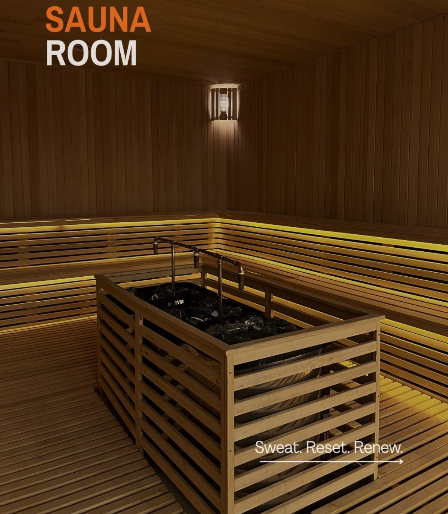
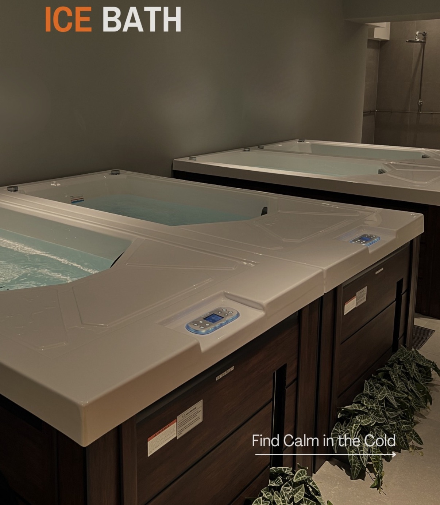
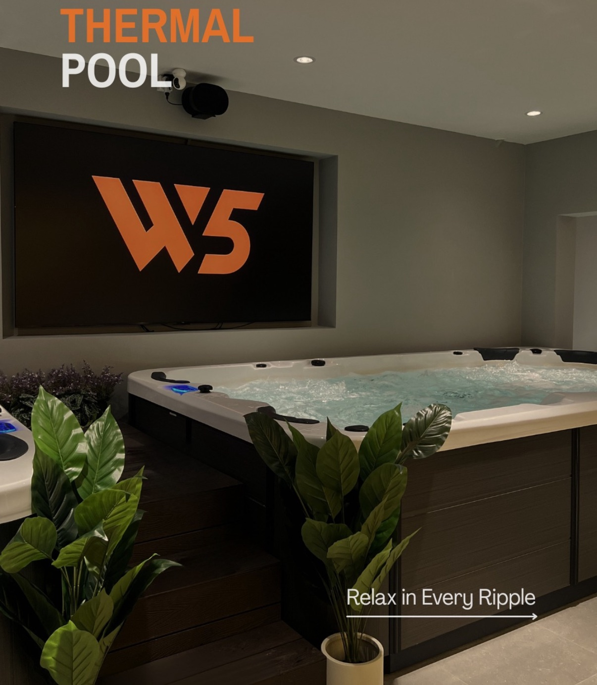
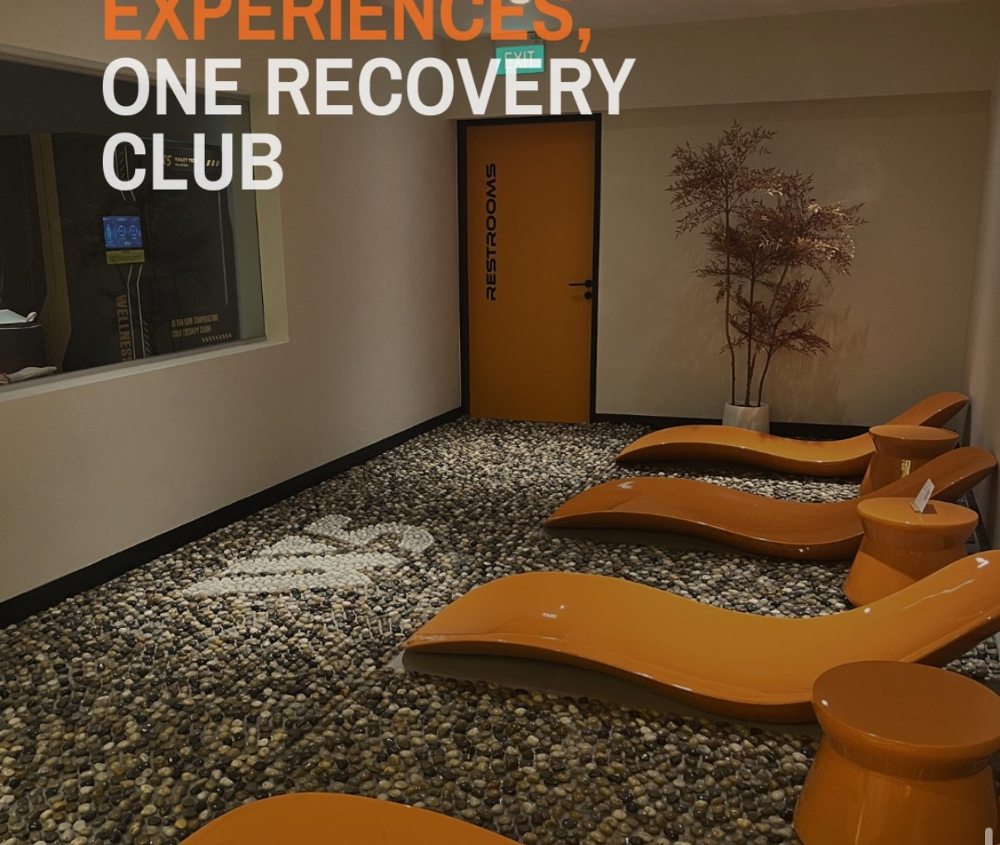

Five experiences. One recovery club.
Recovery isn't one-size-fits-all.
W5 Recovery Club on Carpmael Rd brings five recovery experiences under one roof — cryotherapy, sauna, steam room, ice bath and thermal pool — with a full body scan to start every session.
Five experiences. One recovery club.
Heat opens you up. Cold sharpens you. Cycling between the two is one of the oldest recovery methods in the world — W5 gives it a modern, measured home in Joo Chiat.

Cryotherapy
Three minutes. Total reset.
A short blast of extreme dry cold to kick-start circulation and recovery.

Sauna room
Sweat. Reset. Renew.
Traditional dry heat that lets the muscles release everything the week put in.

Steam room
Breathe deep. Let go.
Humid heat that opens the airways and softens what the sauna doesn't reach.

Ice bath
Find calm in the cold.
Two to four minutes of focused cold — clarity on the other side of the gasp.

Thermal pool
Relax in every ripple.
Warm water to close the circuit and settle the nervous system.

Full body scan
Numbers, not guesswork.
Every session starts with a body scan, so you can track your progress over time.
Not a spa day. A system for feeling sharp again.
The W5 circuit.
A simple, repeatable sequence used by athletes before competition and by everyone else after a long week.
Scan on arrival
A full body scan sets your baseline for the session.
Cryo while completely dry
Cryotherapy comes first — before any heat or water. Three minutes, total reset.
Sauna 15 minutes
Build deep heat and let the muscles release.
Ice bath 2–4 minutes · repeat ×3
The contrast is the point. Cycle sauna and ice bath three times, then settle into the thermal pool.
Sessions are limited. Book ahead.
Reserve your slot through Instagram — the team confirms availability and walks you through your first visit.